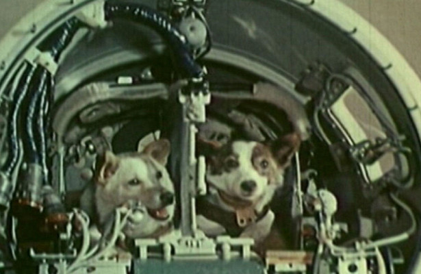
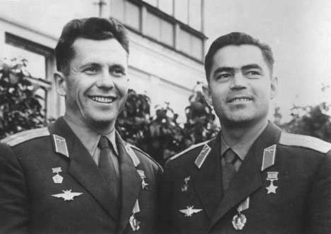
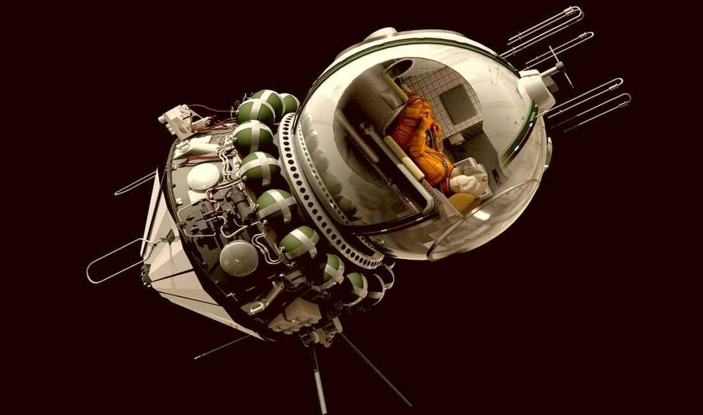
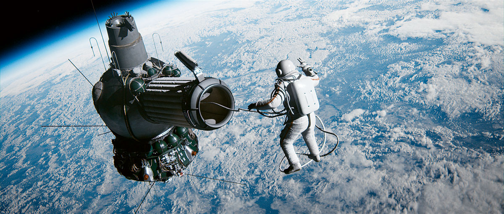
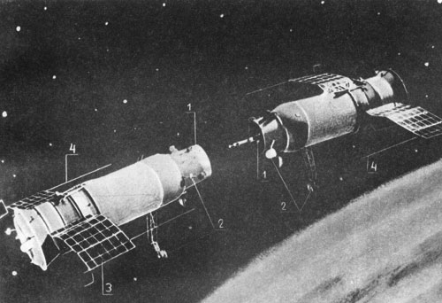
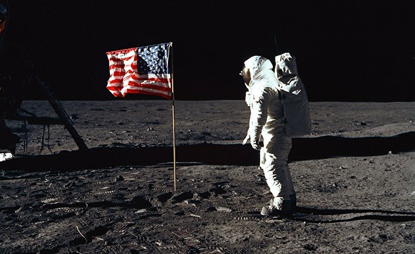

Запуск первого искусственного спутника Земли
Спутник-1 — первый искусственный спутник Земли, был запущен на орбиту 4 октября 1957 года.
Кодовое обозначение спутника — ПС-1 (Простейший Спутник-1). Запуск осуществлялся с 5-го научно-исследовательского полигона министерства обороны СССР «Тюра-Там» (получившего впоследствии открытое наименование космодром Байконур) на ракете-носителе «Спутник» (Р-7). Над созданием искусственного спутника Земли, во главе с основоположником практической космонавтики С. П. Королёвым, работали ученые М. В. Келдыш, М. К. Тихонравов, Н. С. Лидоренко, В. И. Лапко, Б. С. Чекунов, А. В. Бухтияров и многие другие.
Дата запуска считается началом космической эры человечества, а в России отмечается как памятный день Космических войск.

Запуск второго искусственного спутника Земли
Первый в мире биологический спутник с подопытным животным — собакой Лайкой был выведен на орбиту 3 ноября 1957 г. и просуществовал там до 14 апреля 1958 г. На спутнике имелось два радиопередатчика, телеметрическая система, программное устройство, научные приборы для исследования излучения Солнца и космических лучей, системы регенерации и терморегулирования для поддержания в кабине условий, необходимых для существования животного. Были получены первые научные сведения о состоянии живого организма в условиях космического полёта.
Вывод АМС «Луна-1» на гелиоцентрическую орбиту
2 января 1959 был осуществлён пуск ракеты-носителя «Восток-Л», которая вывела на траекторию полёта к Луне АМС «Луна-1». Это была траектория сближения, без использования старта с орбиты. Станция также имела названия «Луна-1D» и «Мечта». «Луна-1» прошла на расстоянии 6000 километров от поверхности Луны и вышла на гелиоцентрическую орбиту.
Среди выдающихся научных результатов, полученных в ходе полёта «Луны-1», можно отметить следующие:
- при помощи бортового магнитометра впервые был зарегистрирован внешний радиационный пояс Земли;
- при помощи ионных ловушек и счётчиков частиц были осуществлены первые прямые измерения параметров солнечного ветра;
- был успешно выполнен эксперимент по созданию искусственной кометы;
- было установлено отсутствие у Луны значительного магнитного поля.
Несмотря на то, что станция на Луну не попала, АМС «Луна-1» стала первым в мире космическим аппаратом, достигшим второй космической скорости, преодолевшим притяжение Земли и ставшим искусственным спутником Солнца. Таким образом, в целом полёт можно охарактеризовать как частично-успешный, рекордный для своего времени и весьма продуктивный с научной точки зрения.

Первый в истории полёт в космос живых существ с успешным возвращением на Землю
Старт Космического аппарата «Спутник-5» состоялся 19 августа 1960 года. На этом корабле совершили полёт собаки Белка и Стрелка — первые животные, побывавшие на орбите и вернувшиеся на Землю невредимыми. Полёт продолжался более 25 часов, за это время корабль совершил 17 полных витков вокруг Земли.
Основной целью эксперимента по запуску второго космического корабля-спутника, названного «Спутник-5» (пятый космический аппарат серии «Спутник»), было исследование влияния факторов космического полёта на организм животных и других биологических объектов (перегрузка, длительная невесомость, переход от перегрузок к невесомости и обратно), изучение действия космической радиации на животные и растительные организмы, на состояние их жизнедеятельности и наследственность, отработка систем, обеспечивающих жизнедеятельность человека, безопасность полёта и благополучное возвращение на Землю. Также было проведено несколько медико-биологических экспериментов и научных исследований космического пространства.

Первый полёт человека в космос
12 апреля 1961. В 6:07 с космодрома Байконур стартовала ракета-носитель 8К72, впоследствии названная РН «Восток», которая вывела на околоземную орбиту советский космический корабль «Восток» 3КА №3. Впервые в мире космический корабль с человеком на борту ворвался в просторы Вселенной.
Корабль пилотировал советский космонавт Юрий Алексеевич Гагарин. Пуском первого в мире космического пилотируемого корабля руководили Главный конструктор Сергей Павлович Королев, а также А.С. Кириллов и Л.А. Воскресенский.
Полет продолжался 1 час 48 минут. После совершения одного оборота вокруг Земли спускаемый аппарат корабля совершил посадку на территории СССР в Саратовской области. В соответствии с намеченной программой, на высоте нескольких километров от поверхности Земли космонавт катапультировался и совершил посадку на парашюте вблизи спускаемого аппарата. Приземление космонавта произошло в 10 ч 55 мин по местному времени на мягкую пашню у берега Волги вблизи деревни Смеловка Терновского района Саратовской области.
Запуск «Востока-1» 12 апреля 1961 года подтвердил высокий технический и научный уровень СССР и ускорил развитие космической программы в США. Полёт подтвердил возможность нормального пребывания человека в космическом пространстве. Юрий Алексеевич Гагарин стал одним из самых известных людей планеты.

Второй полет человека в космос
6 августа 1961 года в девять часов утра по московскому времени Герман Степанович Титов на космическом корабле «Восток-2» поднялся на околоземную орбиту и провел на ней 25 часов 11 минут, облетев Землю 17 раз .
Второй космонавт мира сделал первые фотоснимки Земли, впервые пообедал и поужинал в невесомости, и, главное, сумел поспать в космосе, что было одним из важнейших экспериментов. Герман Титов доказал, что человек может жить и работать в чуждом ему пространстве. Это открыло всему человечеству возможность покорения чужих планет, вселенных и пространств.
Первый в мире групповой космический полет
Летом 1962 года весь мир мог наблюдать первый за всю историю космонавтики групповой космический полет пилотируемых кораблей «Восток — 3» с А.Г. Николаевым на борту и «Восток — 4», управляемый П.Р. Поповичем. Первым на орбиту вышел «Восток — 3». Это произошло 11 августа в 11:30.
Николаев ждал выхода на орбиту своего друга Поповича ровно через сутки — 12 августа в 11:02. «Восток — 3» был выведен на орбиту с апогеем 234,6 км, «Восток — 4» — 236,7 км. В полете космонавтам предстояло решить ряд важных задач: исследовать работоспособность и психологическое состояние космонавтов в условиях полета и, особенно, в условиях невесомости; изучить связь космического полета и физиологического состояния организма человека; оценить эффективность системы отбора и тренировки космонавтов, а также исследовать возможности слаженной работы команды в условиях группового полета.
Приземление планировалось через двое суток — 14 августа. Специальная группа вылетела на вертолетах в Карагандинскую область в район городка Каркаралинск. А.Г. Николаев удачно приземлился в назначенном месте в 9:52. Семью минутами позже у поселка Атасу приземлился и Попович. Продолжительность первого в мире группового полета составила 70 часов 23 минуты 38 секунд, а дальность — 1 млн. 975 тыс. 200 км.

Первый в мире полет женщины-космонавта
16 июня 1963 года Валентина Терешкова на космическом корабле «Восток-6» совершила полет в космос. Она стала шестым по счету советским космонавтом. Одновременно на орбите находился космический корабль «Восток-5», пилотируемый космонавтом Валерием Быковским.
Терешкова довольно тяжело перенесла полет. Однако, несмотря на тошноту и физический дискомфорт, она выдержала 48 оборотов вокруг Земли и провела почти трое суток в космосе, где вела бортовой журнал и делала фотографии горизонта, которые позже были использованы для обнаружения аэрозольных слоёв в атмосфере. «Восток-6» — последний пилотируемый космический корабль по программе «Восток». После Терешковой вторая женщина полетела в космос лишь через 19 лет. Ею стала Светлана Савицкая.
Первый в мире полёт многоместного космического корабля
Первый в мире многоместный космический корабль «Восход-1» совершил полёт 12 октября 1964 года. «Восход-1» был первым космическим аппаратом, который поднимал более чем одного человека в космос и первой программой полета без скафандров. Несмотря на небольшую продолжительность полёта, космонавты стартовали при Хрущёве, а докладывали о результатах полёта уже Брежневу, поскольку на следующий день после их посадки Хрущёв был смещен.
Экипаж корабля:
- Владимир Михайлович Комаров — командир корабля;
- Константин Петрович Феоктистов — научный сотрудник;
- Борис Борисович Егоров — врач.

Первый выход человека в открытый космос
Первый выход в космос был совершён советским космонавтом Алексеем Архиповичем Леоновым 18 марта 1965 года. Леонов вышел в открытый космос с борта космического корабля «Восход-2» с использованием гибкой шлюзовой камеры. Скафандр «Беркут», использованный для первого выхода, был вентиляционного типа и расходовал около 30 литров кислорода в минуту при общем запасе в 1666 литров, рассчитанном на 30 минут пребывания космонавта в открытом космосе. Из-за разности давлений скафандр раздувался и сильно мешал движениям космонавта, что, в частности, сильно затруднило Леонову возвращение на «Восход-2».
Общее время первого выхода составило 23 минуты 41 секунд (из них вне корабля 12 минут 9 секунд), и по его итогам был сделан вывод о возможности человека выполнять различные работы в открытом космосе.

Станция «Венера-3» впервые достигла поверхности Венеры
Станция «Венера-3» была запущена 16 ноября 1965 года в 7 часов 19 минут московского времени с космодрома Байконур. Станция «Венера-3» состояла из орбитального отсека и спускаемого аппарата, в котором был помещён металлический глобус Земли, внутри которого находился вымпел с изображением герба Советского Союза.
1 марта 1966 года станция достигла Венеры и врезалась в неё. Станция «Венера-3» стала первым космическим аппаратом, который достиг поверхности другой планеты. Станция «Венера-3» летела в паре с «Венерой-2». Им не удалось передать данные о самой Венере, но были получены научные данные о космическом и околопланетном пространстве в год спокойного Солнца. Большой объем траекторных измерений представил собой большую ценность для изучения проблем сверхдальней связи и межпланетных перелетов. Были изучены магнитные поля, космические лучи, потоки заряженных частиц малых энергий, потоки солнечной плазмы и их энергетические спектры, космические радиоизлучения и микрометеориты.
Первый искусственный спутник Луны — Станция «Луна-10»
3 апреля 1966 станция «Луна-10» стала первым искусственным спутником Луны.
Космический аппарат был предназначен для вывода на орбиту искусственного спутника Луны и проведения исследований Луны и окололунного пространства. Он состоял из перелётной ступени, осуществлявшей коррекцию траектории и переход с неё на окололунную орбиту, и отделяемого спутника Луны. Перелётная ступень была унифицирована со станциями Луна-4, Луна-9, а, поскольку для выхода на орбиту ИСЛ требуется меньшее изменение скорости, то масса спутника была заметно больше массы АЛС Луна-9 и составляла около 250 кг. Полная масса станции во время перелёта Земля-Луна была около полутора тонн.
Первая стыковка двух беспилотных космических аппаратов
Первым был запущен «Космос-186». Он являлся «активным» кораблём, то есть он должен был найти с помощью радиолокационной антенны «пассивный» корабль «Космос-188», сблизиться с ним и пристыковаться.
30 октября 1967 года во время пролёта корабля «Космос-186» над космодромом был запущен «Космос-188» в той же плоскости орбиты, но с опережением на 24 км.
Во время последнего этапа стыковки скорость сближения кораблей составила 0,5—1 м/с. Во время самой стыковки, штанга стыковочного узла «Космоса-186» попала в конусообразный захват «Космоса-188». К сожалению, стыковка оказалась негерметичной, что привело бы к срыву программы полетов, если бы на кораблях имелись экипажи космонавтов. Состыкованные корабли летали 3,5 часа, совершив около 2 витков вокруг Земли. Затем по команде с Земли они расстыковались и последовательно приземлились.

Первое возвращение космического аппарата «Зонд-5» на Землю после облета Луны
15 сентября 1968 года состоялось возвращение на Землю после облета Луны космического аппарата «Зонд-5». На борту находились живые существа: черепахи, плодовые мухи, черви, растения, семена, бактерии.
«Зонд» — серия советских межпланетных автоматических станций для изучения Луны и космического пространства и отработки техники дальних космических полетов. Созданы для мягкой посадки на Луну, вывода на окололунную орбиту, возвращения на Землю после облета Луны. Максимальная масса около 950 кг. В 1964 – 1970 годах совершили полеты 8 «Зондов».
Первая стыковка двух пилотируемых космических кораблей
Корабль «Союз-4» стартовал 14 января 1969 года. На следующий день, 15 января, с космодрома Байконур стартовал следующий пилотируемый корабль — «Союз-5», на борту которого находились трое космонавтов. 16 января в 08:20 корабли «Союз-4» и «Союз-5» состыковались. Это была первая стыковка двух пилотируемых кораблей. Космонавты Хрунов и Елисеев вышли в открытый космос из корабля «Союз-5» и перешли в корабль «Союз-4». Этот переход был элементом подготовки к предполагаемому полёту на Луну.
После стыковки, агентство ТАСС объявило, что на орбите впервые создана экспериментальная космическая станция с четырьмя космонавтами на борту. Советское телевидение транслировало переход космонавтов Хрунова и Елисеева в прямом эфире. Корабли «Союз-4» и «Союз-5» находились в состыкованном состоянии 4 часа 35 минут.
Первая высадка человека на Луну
20 июля 1969 года, в 20:17:39 командир экипажа Нил Армстронг и пилот Эдвин Олдрин посадили лунный модуль корабля в юго-западном районе Моря Спокойствия. Они оставались на поверхности Луны в течение 21 часа 36 минут и 21 секунды. Всё это время пилот командного модуля Майкл Коллинз ожидал их на окололунной орбите. Астронавты совершили один выход на лунную поверхность, который продолжался 2 часа 31 минуту 40 секунд. Первым человеком, ступившим на Луну, стал Нил Армстронг. Это произошло 21 июля, в 02:56:15. Через 15 минут к нему присоединился Олдрин.
Астронавты установили в месте посадки флаг США, поместили комплект научных приборов и собрали 21,55 кг образцов лунного грунта, которые были доставлены на Землю. После полёта члены экипажа и образцы лунной породы прошли строгий карантин, который не выявил никаких опасных для человека микроорганизмов. Успешное выполнение программы полёта «Аполлона-11» означало достижение национальной цели, поставленной Президентом США Джоном Кеннеди в мае 1961 года : до конца десятилетия осуществить высадку на Луну, и ознаменовало победу США в «лунной гонке с СССР».

Мягкая посадка и начало работы первого самоходного аппарата, управляемого с Земли
«Луноход-1» — первый в мире планетоход, успешно работавший на поверхности другого небесного тела — Луне. Аппарат принадлежал к серии советских дистанционно-управляемых самоходных аппаратов для исследования Луны.
Планетоход предназначался для изучения особенностей лунной поверхности, радиоактивного и рентгеновского космического излучения на Луне, химического состава и свойств грунта.
Был доставлен на поверхность Луны 17 ноября 1970 года советской межпланетной станцией «Луна-17» и проработал на её поверхности до14 сентября 1971 года (в этот день был проведён последний успешный сеанс связи с аппаратом).
Первая в мире мягкая посадка на поверхность Венеры
«Венера-7» — автоматическая научно-исследовательская космическая станция, предназначенная для исследования планеты Венера. «Венера-7» была запущена с космодрома Байконур 17 августа 1970.
2 октября и 17 ноября были проведены две успешные коррекции орбиты станции. Эти коррекции проводились с ориентацией по Солнцу. Две попытки коррекции (27 и 30 сентября) с ориентацией на звезду Сириус, были неудачными.
15 декабря 1970 года, через 120 суток после старта, станция «Венера-7» достигла окрестностей планеты Венера. Во время аэродинамического торможения скорость аппарата относительно планеты уменьшилась с 11,5 км/с до 200 м/с. При этом максимальные перегрузки достигали 350 g. Информация со спускаемого аппарата поступала в течение 53 минут, в том числе — 20 минут с поверхности. Во время спуска были проведены замеры температуры атмосферы, которые менялись от 25 до 475 °C на поверхности планеты.
Постоянные измерения соотношения сигнал/шум принимаемого на Земле сигнала позволили зафиксировать уменьшение в момент посадки уровня сигнала почти в 30 раз. Это могло означать влияние ветра на спускаемый аппарат во время посадки или его опрокидывание.
Основная задача полёта, мягкая посадка на поверхность Венеры, была выполнена. Однако не все запланированные измерения были проведены.
Запущена первая орбитальная станция «Салют-1»
ОКС «Салют» — первая пилотируемая орбитальная станция в мире, созданная по программе гражданских орбитальных пилотируемых станций. Долговременная орбитальная станция выведена на орбиту 19 апреля 1971 года.
Первая экспедиция на корабле «Союз-10» (запущен 24 апреля 1971г., экипаж — В. Шаталов, А. Елисеев, Н. Рукавишников) оказалась не совсем удачной: «Союз-10» состыковался со станцией 24.04.1971, но из-за повреждения стыковочного агрегата корабля герметичного соединения со станцией не образовалось, поэтому переход на борт станции не был осуществлён. В результате чего 25 апреля 1971 года, после 5 часов 30 минут «полёта в сцепке», корабль был (не без проблем) отстыкован, и совершил посадку.
Во время второй экспедиции произошла трагедия. «Союз-11» (запущен 6 июня 1971г., экипаж Г. Добровольский, В. Волков, В. Пацаев) 7 июня в 10:00 произвёл успешную стыковку с «Салютом» и после проверки герметичности, экипаж перешёл на борт станции. За 22 дня трое членов экипажа, несмотря на некоторые нештатные ситуации, успешно выполнили программу полёта. 30 июня была произведена расстыковка, и после выдачи тормозного импульса экипаж приступил к сведению корабля с орбиты. Однако при спуске на Землю произошла разгерметизация спускаемого аппарата в верхних слоях атмосферы. Экипаж погиб.
11 октября 1971 года станция по командам ЦУПа была сведена с орбиты и вошла в плотные слои атмосферы. Несгоревшие обломки упали в Тихий океан.

Станция «Маринер-9» стала первым искусственным спутником Марса
«Маринер-9» — американская автоматическая межпланетная станция, созданная для изучения Марса, как часть программы НАСА Маринер. Станция была запущена 30 мая 1971 года при помощи ракеты-носителя Атлас/Центавр и достигла орбиты планеты 14 ноября того же года, став первым космическим аппаратом на орбите другой планеты. После завершения периода марсианских пылевых бурь, аппарат стал отправлять на Землю чёткие фотоснимки поверхности Марса.
«Маринер-9» был сконструирован для продолжения изучения атмосферы Марса, начатой станциями «Маринер-6» и «Маринер-7», и был способен произвести картографирование более 70 % марсианской поверхности c меньшего расстояния (1500 километров), и с более высоким разрешением, чем любой предыдущий аппарат. Для того, чтобы определить возможные очаги вулканической активности в состав научного оборудования станции был включён инфракрасный радиометр. Также в программе исследований было запланировано изучение двух естественных спутников Марса: Фобоса и Деймоса. «Маринер-9» более чем успешно выполнил все задачи полёта.
Станция «Марс-2» впервые достигла поверхности Марса
«Марс-2» — советская автоматическая межпланетная станция, впервые в истории освоения космоса достигшая поверхности Марса. Была запущена 19 мая 1971 года, совершила совместный полёт и исследования с космическим аппаратом «Марс-3». Вывод на траекторию полёта к Марсу осуществлён с промежуточной орбиты искусственного спутника земли последней ступенью ракеты-носителя. Масса «Марса-2» — 4650 кг.
Первая мягкая посадка АМС на Марс: «Марс-3»
«Марс-3» — советская АМС третьего поколения из серии КА «Марс», предназначенная для исследования Марса как с орбиты, так и непосредственно с поверхности планеты. Для этого АМС имела в своём составе посадочный модуль. «Марс-3» разработан в НПО им. Лавочкина и является первым в мире космическим аппаратом, совершившим мягкую посадку на поверхность Марса.
Станция была запущена с космодрома Байконур при помощи ракеты-носителя «Протон-К» 28 мая 1971 года в 19:26 по московскому времени. В отличие от АМС предыдущего поколения, «Марс-3» был сначала выведен на околоземную орбиту, а потом, при помощи разгонного Блока Д, переведён на межпланетную траекторию. До момента сближения с Марсом полёт проходил по программе.
2 декабря 1971 года была осуществлена первая в мире мягкая посадка на поверхность Марса. Аппарат начал передачу панорамы окружающей поверхности, но полученное изображение представляло собой серый фон с едва заметной линией горизонта. Через 14.5 секунд сигнал пропал. То же самое повторилось со вторым телефотометром. Впоследствии была выдвинута гипотеза о том, что причиной внезапного исчезновения сигнала с поверхности был коронный разряд в антеннах передатчика.
Орбитальный модуль продолжал исследование Марса с орбиты до исчерпания азота в системе ориентации и стабилизации 23 августа 1972 года.

Запуск первого аппарата, покинувшего впоследствии пределы Солнечной системы
«Пионер-10» — беспилотный космический аппарат НАСА, предназначенный, главным образом, для изучения Юпитера. «Пионер-10» стал первым космическим аппаратом, достигшим третьей космической скорости, первым аппаратом, совершившим пролёт Юпитера и сфотографировавшим планету. Аппарат-близнец «Пионер-11» исследовал также Сатурн.
«Пионер-10» был запущен 2 марта 1972 г. носителем Атлас-Центавр. В 1973 г. «Пионер-10» впервые пересёк пояс астероидов, исследовав два астероида и обнаружив пылевой пояс ближе к Юпитеру. В декабре 1973 г. аппарат пролетел на расстоянии 132 тыс. км от облаков Юпитера. Были получены данные о составе атмосферы Юпитера, уточнена масса планеты, измерено её магнитное поле, а также установлено, что общий тепловой поток от Юпитера в 2,5 раза превышает энергию, получаемую планетой от Солнца. «Пионер-10» также позволил уточнить плотность 4-х крупнейших спутников Юпитера.
В 1983 году станция миновала орбиту Плутона и стала первым, запущенным с Земли аппаратом, покинувшим пределы Солнечной системы. Вылетев довольно далеко за пределы орбиты Плутона, аппарат начал испытывать силу неизвестного происхождения, вызывающую очень слабое торможение. Данное явление было названо «эффектом Пионера». Высказывалось много предположений, вплоть до неизвестных пока эффектах инерции или даже времени. Некоторые говорят просто о систематической ошибке измерения.
Последний сигнал от «Пионера-10» был получен 23 января 2003 года. Сообщалось, что аппарат направляется в сторону Альдебарана. Если с ним ничего не случится по пути, он достигнет окрестностей нынешнего положения звезды через 2 миллиона земных лет.
Станция «Венера-9» стала первым искусственным спутником Венеры
«Венера-9» и «Венера-10» — космические аппараты СССР, предназначенные для изучения Венеры в рамках одноименной программы.
«Венера-9» была запущена 8 июня 1975 года, «Венера-10» — 14 июня 1975 года. Ракеты-носители обоих аппаратов — «Протон».
«Венера-9» и «Венера-10» состоят из собственно космического аппарата (КА) и спускаемого аппарата (СА). Масса аппаратов 4936 и 5033 кг; масса каждого СА с теплозащитным корпусом 1560 кг.
В полёте с «Венера-9» и «Венера-10» было проведено две коррекции траектории. За двое суток до подлёта к Венере от КА были отделены СА, которые совершили мягкую посадку (22 и 25 октября 1975) на невидимую в это время с Земли освещенную сторону Венеры.
После отделения СА космические аппараты были переведены на пролётные траектории, а затем выведены на орбиты искусственных спутников планеты. Для передачи научной информации была реализована необходимая баллистическая схема, обеспечившая требуемое пространство, взаимное положение КА и СА. Информация, полученная каждым СА, передавалась на свой КА, ставший к этому времени искусственным спутником Венеры, и ретранслировалась на Землю.
Первый полёт многоразового транспортного космического корабля «Колумбия»
«Колумбия» — первый экземпляр корабля системы «Спейс Шаттл», летавший в космос. Ранее построенный прототип Энтерпрайз летал, но только в пределах атмосферы для отработки посадки. Строительство «Колумбии» было начато в 1975 году и 25 марта 1979 года «Колумбия» была передана в эксплуатацию НАСА. Шаттл был назван в честь парусника, на котором капитан Роберт Грей в мае 1792 года исследовал внутренние воды Британской Колумбии (ныне штаты США Вашингтон и Орегон). Название также было призвано увековечить наименование командного модуля космического корабля «Аполлон-11», который, в свою очередь, был назван в честь статуи, венчающей здание Конгресса США.
Первый пилотируемый полёт многоразового транспортного космического корабля Колумбия STS-1 состоялся 12 апреля 1981 года. Командиром экипажа был ветеран американской космонавтики Джон Янг, пилотом — Роберт Криппен. Полёт был (и остается) уникальным: самый первый, фактически, испытательный запуск космического корабля, проводился с экипажем на борту.
Шаттл «Колумбия» 28 раз летал в космос, провел в космосе 300,74 суток, совершил 4808 оборотов вокруг Земли и пролетел в общей сложности 201 454 702 км. Последний полёт «Колумбии» проходил с 16 января по 1 февраля 2003 года.
Вывод на орбиту базового модуля орбитальной станции Мир
«Мир» («Салют-8») — советская (позднее российская) орбитальная станция третьего поколения, представлявшая собой сложный многоцелевой научно-исследовательский комплекс. Станция была выведена на орбиту в феврале 1986 года, в 2001 году затоплена в Тихом океане.
Над «Миром» работали 280 организаций под эгидой 20 министерств и ведомств. Базовый блок был выведен на орбиту 20 февраля 1986 года. Затем в течение 10 лет один за другим были пристыкованы ещё шесть модулей.
С 1995 года станцию стали посещать иностранные экипажи. На станции побывало 15 экспедиций, из них 14 — международных, с участием космонавтов Сирии, Болгарии, Афганистана, Франции (5раз), Японии, Великобритании, Австрии, Германии (2 раза), Словакии, Канады. Всего на станции работало 104 космонавта из 12 стран.
В рамках программы «Мир — Шаттл» было осуществлено семь кратковременных экспедиций посещения с помощью корабля «Атлантис», одна с помощью корабля «Индевор» и одна с помощью корабля «Дискавери», во время которых на станции побывали 44 астронавта.
В конце 1990-х годов на станции начались многочисленные проблемы из-за постоянного выхода из строя различных приборов и систем. Через некоторое время правительство РФ, ссылаясь на дороговизну дальнейшей эксплуатации, несмотря на многочисленные проекты спасения станции, приняло решение затопить «Мир». 23 марта 2001 года проработавшая в три раза дольше первоначально установленного срока станция была затоплена в специальном районе в южной части Тихого океана, рядом с островами Фиджи.
Рекорды станции:
- Валерий Поляков — непрерывное пребывание в космосе в течение 438 суток (1995 год).
- Шеннон Лусид — рекорд длительности космического полёта среди женщин — 188 суток (1996 год).
- Количество экспериментов — 23 000.
Первый и единственный космический полёт МКС «Буран» в автоматическом режиме
«Буран» — орбитальный корабль-космоплан советской многоразовой транспортной космической системы (МТКК), созданный в рамках программы «Энергия — Буран». Один из двух реализованных в мире орбитальных кораблей МТКК, «Буран» был ответом на аналогичный американский проект «Спейс шаттл».
Свой первый и единственный космический полёт «Буран» совершил 15 ноября 1988 года. Космический корабль был запущен с космодрома Байконур при помощи ракеты-носителя «Энергия». Продолжительность полёта составила 205 минут, корабль совершил два витка вокруг Земли, после чего произвёл посадку на аэродроме «Юбилейный» на Байконуре. Полёт прошёл без экипажа в автоматическом режиме с использованием бортового компьютера и бортового программного обеспечения, в отличие от шаттла, который традиционно совершает последнюю стадию посадки на ручном управлении. Данный факт — полёт космического аппарата в космос и спуск его на Землю в автоматическом режиме под управлением бортового компьютера — вошёл в книгу рекордов Гиннеса.
В 1990 году работы по программе «Энергия-Буран» были приостановлены, а в 1993 году программа окончательно закрыта. Единственный летавший в космос (1988) «Буран» был разрушен в 2002 году при обрушении крыши монтажно-испытательного корпуса на Байконуре, в котором он хранился вместе с готовыми экземплярами ракеты-носителя «Энергия».
Станция «Галилео» стала первым искусственным спутником Юпитера
«Галилео» — автоматический космический аппарат НАСА, созданный для исследования Юпитера и его спутников. Аппарат был запущен в 1989 году и проработал до 2003 года. Это был первый (и пока единственный) аппарат, вышедший на орбиту Юпитера, изучавший планету длительное время и сбросивший в её атмосферу спускаемый зонд.
Станция передала свыше 30 гигабайт информации, включая 14 тысяч изображений планеты и спутников, а также уникальную информацию об атмосфере Юпитера. Название станции связано с тем, что именно Галилео Галилей открыл четыре спутника Юпитера в 1610 году.
Станция «Кассини» стала первым искусственным спутником Сатурна
«Кассини» — автоматическая межпланетная станция, названа в честь итальянско-французского астронома Джованни Кассини. Станция запущена 15 октября 1997 года. Бюджет проекта более $3 млрд.
Для разгона аппарат использовал гравитационное поле трёх планет. Он два раза пролетел рядом с Венерой — в 1998 и 1999 годах, затем, в августе 1999 года со скоростью 69 тыс. км/ч прошёл около Земли, зимой 2000 года пролетел мимо Юпитера, передав на Землю его фотографии. На этот момент двигательная система ориентации стала давать сбои, однако через некоторое время всё наладилось. Специалисты посчитали, что в маховики попал мусор.
Станция прибыла к Сатурну 30 июня 2004 года и стала первым искусственным спутником этой планеты. Орбитальная скорость спутника составила 15 км/с. «Кассини» нёс на борту европейский зонд «Гюйгенс», который 14 января 2005 года впервые опустился на Титан.
В 2008 году НАСА продлило миссию «Кассини» до 2010, а по истечении этого срока — до 2017, так что аппарат ждут несколько дополнительных сближений с Энцеладом, а также с другими спутниками газового гиганта.
Станция «MESSENGER» стала первым искусственным спутником Меркурия
Мессенджер — американская автоматическая межпланетная станция (АМС) для исследования Меркурия. АМС была запущена 3 августа 2004 года со станции ВВС США «Мыс Канаверал» с помощью ракеты-носителя Дельта 7925H-9.5. 18 марта 2011 года в 01:10 станция благополучно вышла на орбиту Меркурия.
Меркурий относится к одним из самых малоизученных объектов Солнечной системы. За всю историю космических исследований США его посетил всего один аппарат —«Маринер-10», 3 раза пролетевший мимо планеты в 1974—1975 годах. Было заснято менее половины поверхности Меркурия, отсутствовали данные о химическом составе, строении планеты и многом другом. Для заполнения этих пробелов НАСА была организована миссия Мессенджер. После принятия решения о продлении срока службы аппарата на год (изначально он должен был завершить работу 17 марта 2012 года) в задачи полета также было включено изучение воздействия увеличения солнечной активности на Меркурий в ходе начала нового солнечного цикла.
На сегодняшний день пока только две державы могут похвастать богатой космической историей — это США и Россия, которой в наследство достались все удачи и ошибки, совершенные СССР.
Сегодня можно констатировать, что в мире сформировался так называемый клуб космических держав – стран, отправивших в космос своих представителей или космические аппараты. В этот список входят: лидер космической гонки США, страны ЕС, Россия, Китай и Япония.
Но эксперты считают, что хотя Соединенные Штаты и доминируют в большинстве связанных с космосом областей, их национальное превосходство постепенно уменьшается, а многие другие нации наоборот расширяют свои государственные и коммерческие космические программы в намного более быстром темпе.
Япония и Китай уже имеют ряд спутников на лунной орбите, Индия и Россия также работают над лунными орбитальными аппаратами.Южная Корея, Тайвань и Бразилия имеют планы быстро развить свою космонавтику и по возможности стать дешевыми пусковыми установками для спутников. Южная Корея и Бразилия самостоятельно развивают ракету и производство спутников.
Положительные сдвиги замечены и в России. Так, за 2009-2011 годы только в рамках развития авиапрома государство выделило на эти программы более 270 миллиардов рублей. А по уровню ежегодных расходов на освоение космоса Россия вышла на четвертое место в мире по абсолютным объемам вложения средств.
Лев Зеленый, директор Института космических исследований при Российской академии наук, заявил: «В 2015 году мы запустим спускаемый аппарат, в 2016 – орбитальный аппарат «Луна Глоб», а в 2017 – зонд «Луна Ресурс. В течение ближайшего десятилетия центром нашего внимания будет Луна. «Луна-Глоб» представляет собой мощный аппарат, на борту которого находится научная аппаратура весом более 100 килограмм. Мы изучим экзосферу Луны и проведем астрофизические исследования».